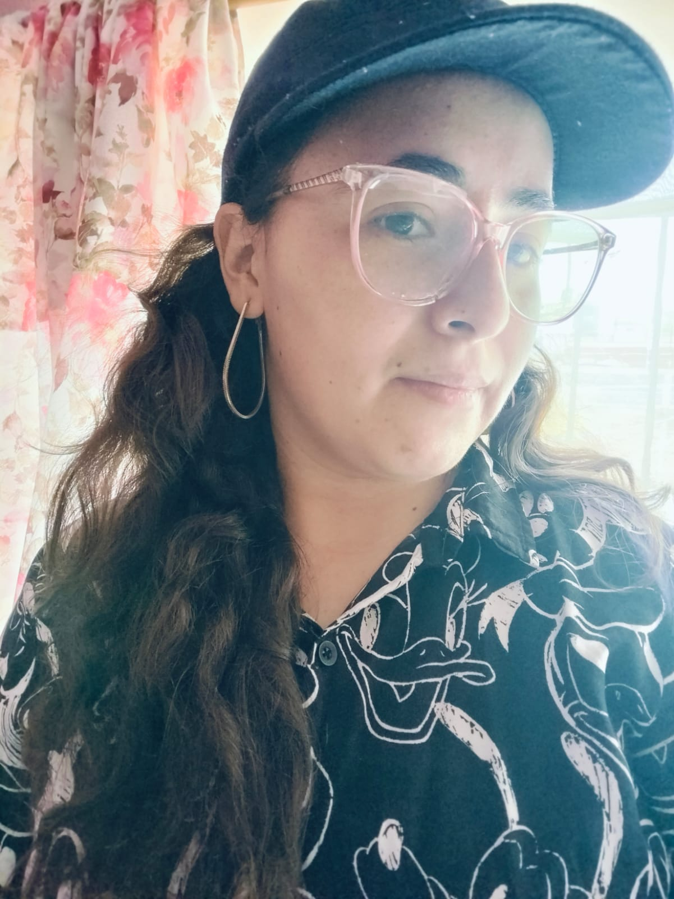

<!DOCTYPE html>
<html lang="es">
</html>

<head>
        <meta charser = "UTF-8">
        <meta NAME = "Viewport" content="width = device - width, initial-scale= 1.0">
        <title> Acerca de mi</title>
        <link> rel= "stylesheet" href= "/styles/.ccs">
        <style>
                *{
                        background-color: rgb(226, 43, 156);*
                }

                h1 {  
                        font-family: 'Lucida Sans', 'Lucida Sans Regular','Lucida Grande',
                        'Lucida Sans Unicode', Verdana, Geneva, Tahoma, sans-serif;
                        text-align: center;

                }

        </style>

</head>

<body>
    <h1>🌟Shelder Tatiana Flores Durán🌟 </h1>
    <!-- colocar foto-->
     <h2>Un poco sobre mi:
        Shelder Tatiana Flores Durán nació el 31 de mayo en Texcoco, Estado de México,
         bajo el signo de Géminis, lo que se manifiesta en su curiosidad inagotable y su versatilidad para explorar distintos campos. 
         Apasionada por la herbolaria, el Reiki y el arte manual, ha cultivado un espíritu emprendedor y creativo a lo largo de su vida.
        Su camino académico la llevó a la ingeniería textil, donde combina tecnología y diseño, mientras desarrolla su potencial como
        futura desarrolladora JavaScript junior. Noble, ingeniosa y persistente, sigue la filosofía de hacer el bien siempre que esté
        en sus manos. Más allá del ámbito profesional, ha explorado la improvisación teatral y posee una notable 
        destreza en manualidades, además de haber liderado rescates de perros y gatos, encontrando hogar para más de 40 felinos.
        Aunque ha aprendido a priorizarse, su esencia sigue siendo la de alguien que crea, transforma y deja huella en cada proyecto 
        que emprende.


     </h2>
     
     
     <ul>
        <li>Herbolaria</li>
        <li>Reiki</li>
        <li>Manualidades</li>
        <li>Viajar y conocer nuevos lugares</li>
        <li>Estar en la naturaleza</li>
        <li>Rescate y bienestar animal</li>
        <li>Desarrollo en JavaScript</li>
        <li>Improvisación teatral</li>

</ul>
<h2>Mi top 5 de canciones favoritas</h2>
<ol>
        <h2>Mi top 5 de canciones favoritas</h2>
        <li><a href="https://music.youtube.com/search?q=himno+a+la+banda" target="_blank">Canción 1</a></li>
  <li><a href="https://music.youtube.com/search?q=can+take+my+eyes+off+you" target="_blank">Canción 2</a></li>
  <li><a href="https://music.youtube.com/search?q=barry+white" target="_blank">Canción 3</a></li>
  <li><a href="https://music.youtube.com/search?q=eminem+till+i+collapse" target="_blank">Canción 4</a></li>
  <li><a href="https://music.youtube.com/search?q=asi+no+te+amara+jamas" target="_blank">Canción 5</a></li>
  


</ol>

      
      
      
        
              
              

     <!-- biografia en un parrafo-->
      <!-- Hobbies, poner encabezado y colocarlos en una lista ordenada-->
       <!-- sección de musica, lista ordenada con cada elemento y su link de Yt-->
</body>

</html>